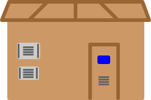
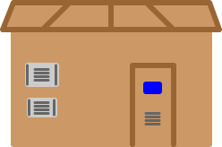

ERDF a pour rôle de :
- Raccorder les clients au réseau.
- Exploiter et moderniser le réseau.
- Accompagner les projets des collectivités locales.
- Conduire et piloter le réseau à distance.
- Assurer le dépannage 24h/24 7j/7 par tous les temps.
- Assurer le comptage des consommations pour les fournisseurs d'énergie.
ERDF est :
- Au service de 35 millions de clients et fournisseurs et autorités concédantes.
- Proche de ses clients.
- Disponible 7j/7 24h/24 partout en France.
ERDF pour :
- Exploiter.
- Réparer.
- Entretenir 95 % du réseau de distribution d'électricité.
ERDF afin de :
- Renforcer les réseaux.
- Améliorer la distribution d'électricité.
- Anticiper les nouveaux besoins de demain.
- Préparer les territoires de demain.
- Favoriser le développement économique local.
- Améliorer la maîtrise de la demande d'énergie.
- Réduire l'impact des réseaux sur les paysages.
- Protéger la biodiversité.
ERDF en chiffres:
- 11 millions d'interventions techniques.
- 1 300 000 kms de lignes.
- 16 500 MW raccordés énergies renouvelables.
- + de 300 000 installations raccordées énergies renouvelables.
- + de 1000 implantations en France.
- 38 000 salariés aux compétences renouvelées.
- 1702 nouvelles embauches.
- 2325 apprentis.
ERDF dans le but de devenir:
- Le pionnier européen dans le développement des réseaux intelligents.
- Le distributeur de référence en Europe.


 
